In [1]:
%matplotlib inline
import matplotlib.pyplot as plt
In [2]:
from pyke.prf import SimpleKeplerPRF
/Users/jvmirca/anaconda3/lib/python3.6/site-packages/matplotlib/__init__.py:1405: UserWarning:
This call to matplotlib.use() has no effect because the backend has already
been chosen; matplotlib.use() must be called *before* pylab, matplotlib.pyplot,
or matplotlib.backends is imported for the first time.
warnings.warn(_use_error_msg)
In [3]:
prf = SimpleKeplerPRF(channel=16, shape=(11, 11), column=250, row=200)
In [4]:
plt.imshow(prf(flux=1e4, center_col=255.5, center_row=205.5), origin='lower')
Out[4]:
<matplotlib.image.AxesImage at 0x118094f28>
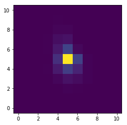
In [5]:
import numpy as np
from scipy import signal
In [6]:
cadences = np.arange(1000)
In [7]:
A = 1e4 + 1e2 * np.sin(2 * np.pi * np.linspace(0, 6, 1000)) + 300 * np.linspace(0, 1, 1000)
xc = 255.5 + 0.05 * np.random.normal(size=1000) + .3*signal.sawtooth(np.linspace(0, 100, 1000))
yc = 205.5 + 0.05 * np.random.normal(size=1000) + .3 - .3*signal.sawtooth(np.linspace(0, 100, 1000))
In [8]:
tpf = np.array([np.random.poisson(prf(flux=A[i], center_col=xc[i], center_row=yc[i]) + 3) for i in range(1000)])
In [34]:
plt.imshow(tpf[100], origin='lower')
Out[34]:
<matplotlib.image.AxesImage at 0x118921780>
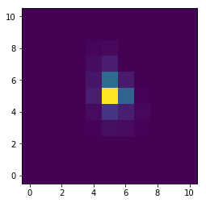
In [9]:
lc = np.sum(tpf, axis=(1,2))
In [10]:
plt.figure(figsize=[14, 4])
plt.plot(cadences, lc)
Out[10]:
[<matplotlib.lines.Line2D at 0x118242208>]
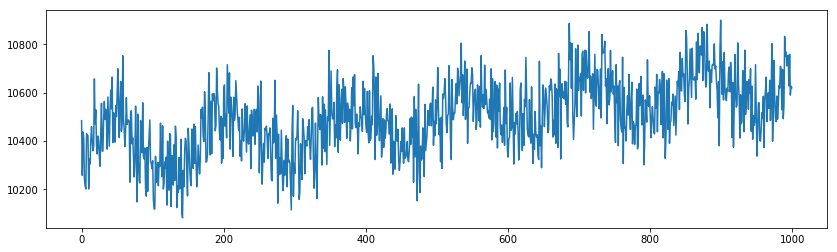
In [11]:
plt.figure(figsize=[14, 4])
plt.plot(cadences, xc, 'o', markersize=2)
Out[11]:
[<matplotlib.lines.Line2D at 0x11838a908>]
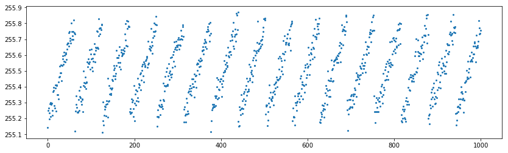
In [12]:
plt.figure(figsize=[14, 4])
plt.plot(cadences, yc, 'o', markersize=2)
Out[12]:
[<matplotlib.lines.Line2D at 0x1184fc7b8>]
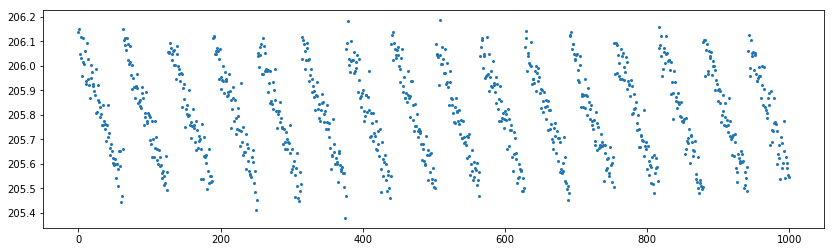
In [13]:
from pyke.prf import PRFPhotometry
In [14]:
from oktopus.models import IntegratedSymmetricGaussian2D
In [15]:
from oktopus.prior import UniformPrior
In [16]:
y, x = np.indices(prf.shape) + 0.5
In [17]:
x = x + 250
y = y + 200
In [18]:
psf = IntegratedSymmetricGaussian2D(x, y)
In [19]:
plt.imshow(psf(1000, 255.5, 205.5, 1), origin='lower')
Out[19]:
<matplotlib.image.AxesImage at 0x118673828>
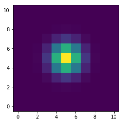
In [20]:
prior = UniformPrior(lb=[5e3, 253.5, 203.5, .25],
ub=[15e3, 257.5, 207.5, 1.25])
In [21]:
phot_poisson = PRFPhotometry(scene_model=psf, prior=prior)
In [22]:
results_poisson = phot_poisson.fit(tpf_flux=tpf)
0%| | 0/1000 [00:00<?, ?it/s]/Users/jvmirca/anaconda3/lib/python3.6/site-packages/autograd/core.py:82: RuntimeWarning: divide by zero encountered in log
result_value = self.fun(*argvals, **kwargs)
/Users/jvmirca/dev/oktopus/oktopus/likelihood.py:247: RuntimeWarning: invalid value encountered in multiply
return np.nansum(self.mean(*params) - self.data * np.log(self.mean(*params)))
/Users/jvmirca/anaconda3/lib/python3.6/site-packages/scipy/optimize/optimize.py:1927: RuntimeWarning: invalid value encountered in double_scalars
tmp2 = (x - v) * (fx - fw)
/Users/jvmirca/anaconda3/lib/python3.6/site-packages/scipy/optimize/optimize.py:1928: RuntimeWarning: invalid value encountered in double_scalars
p = (x - v) * tmp2 - (x - w) * tmp1
100%|██████████| 1000/1000 [00:25<00:00, 40.40it/s]
In [23]:
flux = results_poisson[:, 0]
xcenter = results_poisson[:, 1]
ycenter = results_poisson[:, 2]
shape = results_poisson[:, 3]
In [24]:
plt.figure(figsize=[14, 4])
plt.plot(cadences, flux - lc)
Out[24]:
[<matplotlib.lines.Line2D at 0x10ba65a90>]
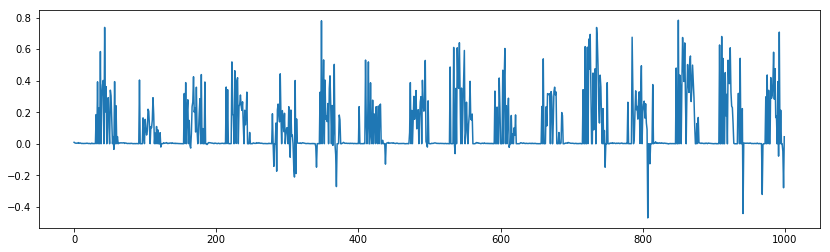
In [25]:
plt.figure(figsize=[14, 4])
plt.plot(cadences, xcenter - xc, 'o', markersize=2)
Out[25]:
[<matplotlib.lines.Line2D at 0x10c731128>]
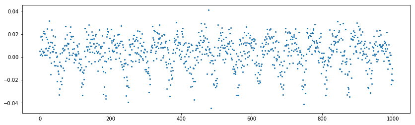
In [26]:
plt.figure(figsize=[14, 4])
plt.plot(cadences, ycenter - yc, 'o', markersize=2)
Out[26]:
[<matplotlib.lines.Line2D at 0x115f288d0>]
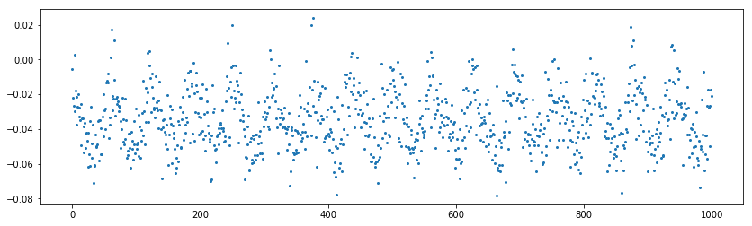
In [27]:
from oktopus import GaussianPosterior
In [28]:
phot_gauss = PRFPhotometry(scene_model=psf, prior=prior, loss_function=GaussianPosterior, var=1.)
In [29]:
results_gauss = phot_gauss.fit(tpf_flux=tpf)
0%| | 0/1000 [00:00<?, ?it/s]/Users/jvmirca/anaconda3/lib/python3.6/site-packages/scipy/optimize/optimize.py:1927: RuntimeWarning: invalid value encountered in double_scalars
tmp2 = (x - v) * (fx - fw)
100%|██████████| 1000/1000 [00:43<00:00, 21.05it/s]
In [30]:
flux = results_gauss[:, 0]
xcenter = results_gauss[:, 1]
ycenter = results_gauss[:, 2]
shape = results_gauss[:, 3]
In [31]:
plt.figure(figsize=[14, 4])
plt.plot(cadences, flux - lc)
Out[31]:
[<matplotlib.lines.Line2D at 0x1160b1320>]
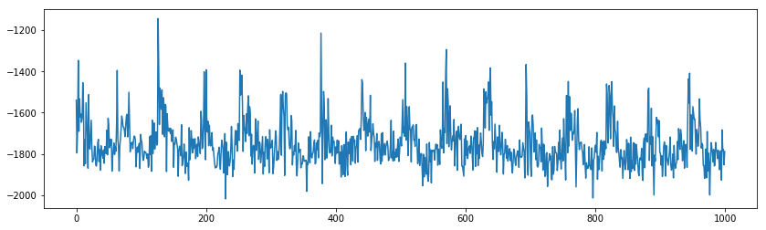
In [32]:
plt.figure(figsize=[14, 4])
plt.plot(cadences, xcenter - xc, 'o', markersize=2)
Out[32]:
[<matplotlib.lines.Line2D at 0x10c640828>]

In [33]:
plt.figure(figsize=[14, 4])
plt.plot(cadences, ycenter - yc, 'o', markersize=2)
Out[33]:
[<matplotlib.lines.Line2D at 0x10c6d74e0>]
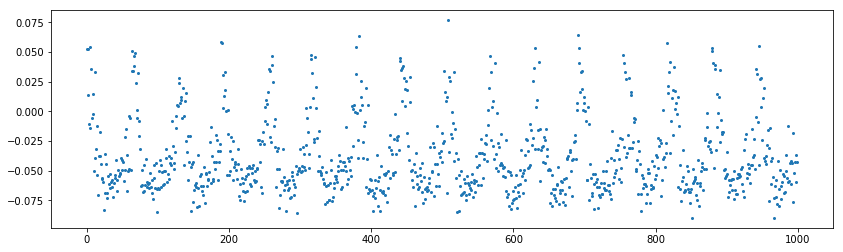
In [ ]: